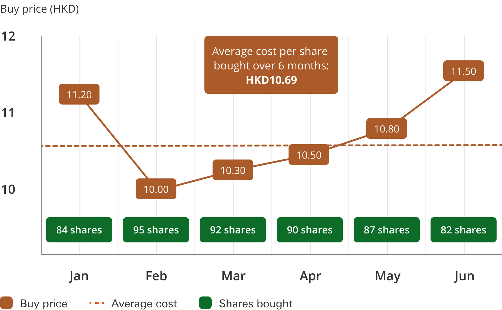

Lorsque vous ouvrez l'application de votre courtier pour consulter votre portefeuille, votre regard est immédiatement attiré par des pourcentages verts ou rouges à côté du nom de vos entreprises. Mais comment ce pourcentage est-il calculé ? Quelle est la ligne de départ de votre investissement ?
La réponse tient en trois lettres : le PRU, pour Prix de Revient Unitaire. C'est la métrique la plus fondamentale de votre interface de gestion. Le PRU est le coût d'acquisition moyen pondéré d'une action que vous détenez. C'est ce chiffre précis qui détermine le seuil de rentabilité de votre position : si le cours de bourse actuel est supérieur à votre PRU, vous êtes en plus-value. S'il est inférieur, vous êtes en moins-value.
Attention : Le véritable PRU intègre toujours vos frais d'achat (commissions, taxes). C'est pourquoi acheter une action de 100 € avec 2 € de frais de courtage vous donnera un PRU initial de 102 €, et non de 100 €.
1. La force gravitationnelle : "Moyenner à la baisse"
L'un des plus grands avantages d'un investisseur disposant de flux de revenus réguliers (ou d'une poche de liquidités, comme vu au chapitre précédent) est la capacité d'acheter une même entreprise à différents moments. Si vous achetez une action à des prix différents au fil du temps, votre PRU va s'ajuster mécaniquement.
Le cas d'usage le plus connu est l'action de moyenner à la baisse (Averaging Down). Imaginez que vous ayez acheté d'excellentes actions à 11,20 €. Quelque temps plus tard, suite à une panique macroéconomique, le cours s'effondre à 10,00 €. Au lieu de paniquer, vous profitez des soldes pour racheter un nouveau bloc d'actions. L'achat de ces nouvelles actions moins chères va littéralement "tirer" votre PRU global vers le bas.

Dans l'exemple ci-dessus, en achetant régulièrement des titres pendant la phase de baisse, l'investisseur a abaissé son Prix de Revient Unitaire à 10,69. Ainsi, lorsque le cours de l'action s'est finalement redressé à 11,50 en juin, l'investisseur était déjà en fort bénéfice depuis longtemps, car son seuil de rentabilité (son PRU) avait été abaissé.
Le piège mortel du couteau qui tombe 🔪
Moyenner à la baisse n'est une bonne stratégie que si, et seulement si, vous êtes intimement convaincu de l'excellence de l'entreprise (Quality Investing) et que la baisse est irrationnelle. Abaisser son PRU sur une entreprise dont les bénéfices s'effondrent et dont le modèle économique meurt, c'est ce qu'on appelle "rattraper un couteau qui tombe". Vous ne faites que jeter de l'argent frais par les fenêtres pour masquer une erreur.
2. L'élégance de "Moyenner à la hausse" (Acheter l'excellence)
Si moyenner à la baisse est populaire, c'est l'action de moyenner à la hausse (Averaging Up) qui distingue véritablement un amateur d'un professionnel en Quality Investing.
Supposons que vous ayez acheté des actions Microsoft à 200 €. Quelques années plus tard, Microsoft a dominé le Cloud, lancé des intelligences artificielles révolutionnaires, et son cours atteint 400 €. L'entreprise est fondamentalement meilleure aujourd'hui qu'elle ne l'était hier. Devriez-vous refuser d'en acheter davantage sous prétexte que cela ferait monter votre magnifique PRU de 200 € ? Non. C'est une erreur stratégique majeure.
En Quality Investing, les gagnants continuent de gagner. Les entreprises exceptionnelles créent de la valeur sur des décennies. Si les fondamentaux le justifient, il faut avoir le courage d'acheter vos actions plus cher qu'hier. Oui, votre PRU va remonter, mais vous allouez votre capital à une entreprise qui a prouvé sa supériorité éclatante.
3. Le Biais d'Ancrage : Le marché se moque de votre PRU
L'un des plus grands défis de l'investisseur particulier est de se détacher émotionnellement de son interface de courtage. Le PRU génère un biais cognitif dévastateur : le Biais d'Ancrage.
Les investisseurs deviennent littéralement obsédés par ce chiffre de référence. Ce biais se manifeste de deux manières dramatiques :
- Le refus de couper un perdant : "Je ne vends pas cette action minable tant qu'elle n'est pas revenue à mon PRU, je refuse d'acter la perte." Résultat : le capital reste bloqué pendant des années sur une entreprise "zombie" alors qu'il aurait pu être redéployé sur un monopole en pleine croissance.
- Le refus de renforcer un gagnant : "Je refuse d'acheter plus de LVMH aujourd'hui, cela va ruiner mon PRU qui est si bas et réduire mon pourcentage vert de +150% à +60% !" Résultat : on privilégie la satisfaction de l'ego visuel (avoir un beau pourcentage sur son écran) à la construction réelle de la richesse en euros.
Gravevez cette règle dans le marbre : Le marché boursier ignore totalement à quel prix vous avez acheté vos actions. Le cours de bourse d'une entreprise s'ajustera sur ses bénéfices futurs, que votre PRU soit de 10 € ou de 100 €. Prenez vos décisions d'investissement en regardant les flux de trésorerie et la valorisation actuelle de l'entreprise, pas le pourcentage rouge ou vert qui s'affiche sur votre téléphone.
4. Les ajustements techniques : Stock Splits et Devises
Pour être totalement maître de votre portefeuille, vous devez comprendre deux phénomènes mécaniques fréquents qui peuvent modifier l'affichage de votre PRU sur votre application, sans pour autant que vous n'ayez acheté ou vendu la moindre action.
Le mystère des "Stock Splits" (Division d'actions) : Les excellentes entreprises (comme Apple, Alphabet ou Amazon) voient souvent leur cours monter si haut qu'elles décident de procéder à une division de leurs actions pour rester psychologiquement accessibles aux petits portefeuilles. Si une entreprise dont l'action vaut 1 000 € annonce un "Split 10 pour 1", le cours passera mathématiquement à 100 €. Ne paniquez pas en voyant votre PRU s'effondrer le lendemain matin ! Votre courtier ajustera automatiquement votre PRU en le divisant par 10, et multipliera par 10 le nombre de vos actions. La valeur totale de votre investissement reste rigoureusement identique, c'est simplement le gâteau qui a été coupé en plus de parts.
L'illusion d'optique du Taux de Change (L'Effet Devise) : C'est la source de panique numéro un des investisseurs débutants qui achètent des actions américaines : "L'action Microsoft a fait +5 % hier à Wall Street, mais sur mon compte Trade Republic, ma ligne est dans le rouge, pourquoi ?" Il faut être extrêmement vigilant sur l'affichage : la majorité des courtiers européens affichent votre PRU et votre performance dans votre devise locale (l'Euro), et non dans la devise d'origine de l'action (le Dollar). Par conséquent, votre PRU intègre le taux de change EUR/USD ! Si le dollar s'affaiblit face à l'euro, cette perte de change vient plomber l'affichage de votre ligne, même si l'entreprise performe très bien de manière intrinsèque. L'inverse est aussi vrai. Vérifiez toujours si l'interface de votre courtier vous affiche votre PRU en euros ou en devises pour comprendre vos véritables performances.
🔑 Ce qu'il faut retenir
Le PRU est la moyenne du coût d'acquisition de vos actions (frais inclus). Racheter en baisse diminue ce PRU, tandis que racheter un champion en hausse le fera monter, ce qui est une excellente stratégie.
Ne laissez jamais votre ego lié à votre PRU dicter vos décisions : le marché se moque totalement de votre prix d'achat initial.
Gardez en tête que l'affichage de votre PRU et de votre performance peut être temporairement faussé par des divisions d'actions (Stock Splits) ou par les fluctuations des devises (taux de change EUR/USD).